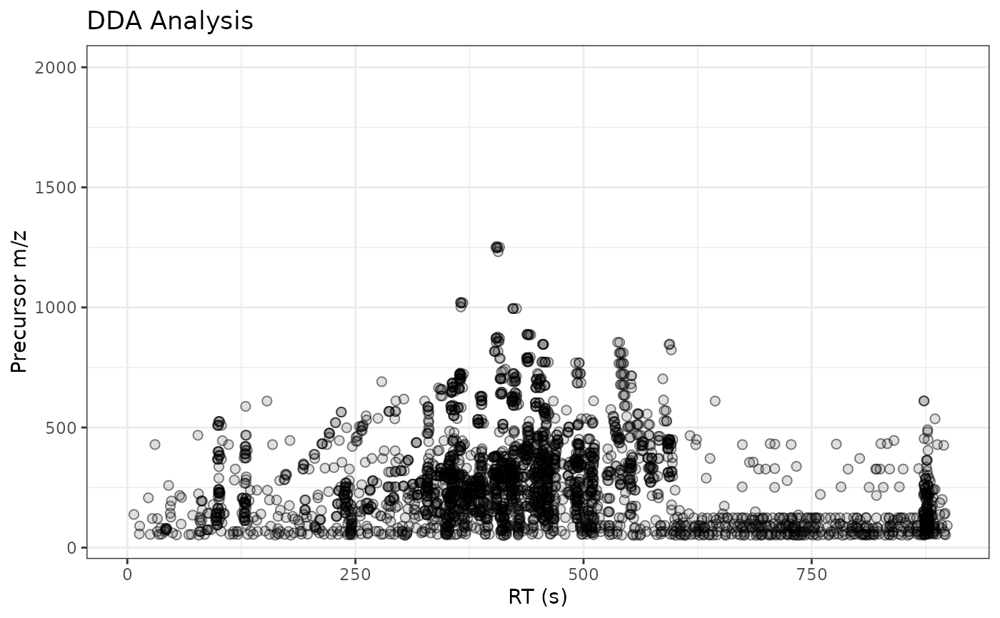
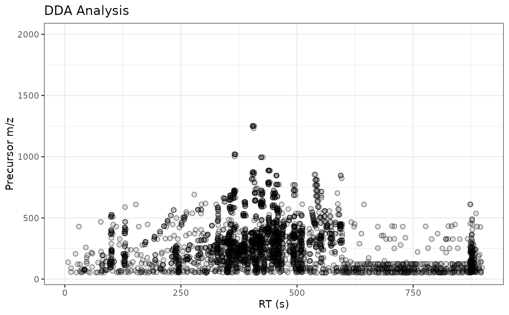

ggplot2 Version of plotPrecursorIons
Source:R/AllGenerics.R, R/gplotPrecursorIons-methods.R
gplotPrecursorIons.RdCreates a ggplot2 version of precursor ion visualization for MsExperiment objects. This function plots the m/z and retention time of all precursor ions in MS2 spectra, useful for visualizing DDA (Data-Dependent Acquisition) data.
Usage
gplotPrecursorIons(
object,
pch = 21,
col = "#00000080",
bg = "#00000020",
xlab = "retention time",
ylab = "m/z",
main = character(),
...
)
# S4 method for class 'MsExperiment'
gplotPrecursorIons(
object,
pch = 21,
col = "#00000080",
bg = "#00000020",
xlab = "retention time",
ylab = "m/z",
main = character(),
...
)Arguments
- object
An
MsExperimentobject containing MS/MS data.- pch
Point shape for precursor ions (default: 21 = filled circle).
- col
Point color (default: semi-transparent black).
- bg
Point background/fill color (default: very transparent black).
- xlab
X-axis label (default: "retention time").
- ylab
Y-axis label (default: "m/z").
- main
Plot title (default: file basename from dataOrigin).
- ...
Additional ggplot2 parameters.
Details
This function visualizes the precursor ions selected for fragmentation in MS/MS experiments. Each point represents a precursor ion, with:
X-axis: Retention time of the MS2 spectrum
Y-axis: Precursor m/z value
For MsExperiment objects with multiple files, separate plots are created for each file.
The plot range includes all MS1 data to provide context, but only shows precursor ions from MS2 spectra.
See also
plotPrecursorIons for the original XCMS implementation.
Examples
# \donttest{
library(xcmsVis)
library(MsExperiment)
## Load a test data file with DDA LC-MS/MS data
fl <- system.file("TripleTOF-SWATH", "PestMix1_DDA.mzML", package = "msdata")
pest_dda <- readMsExperiment(fl)
gplotPrecursorIons(pest_dda)
 ## Subset the data object to plot the data specifically for one or
## selected file/sample:
gplotPrecursorIons(pest_dda[1L])

# }
## Subset the data object to plot the data specifically for one or
## selected file/sample:
gplotPrecursorIons(pest_dda[1L])

# }